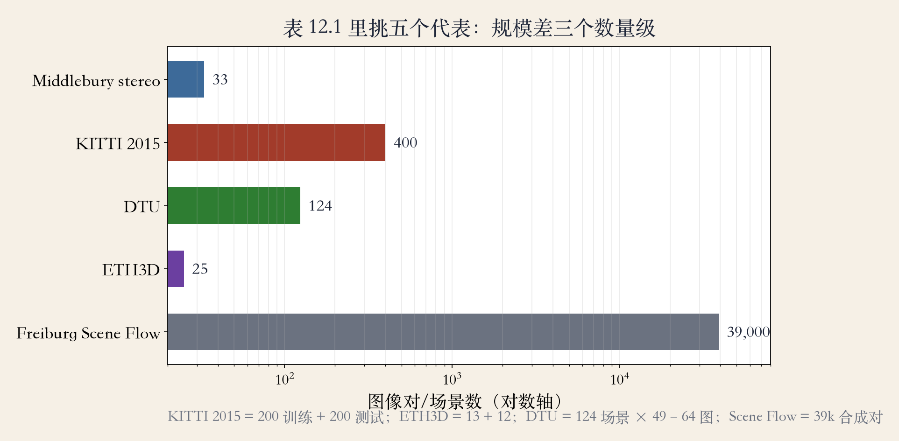
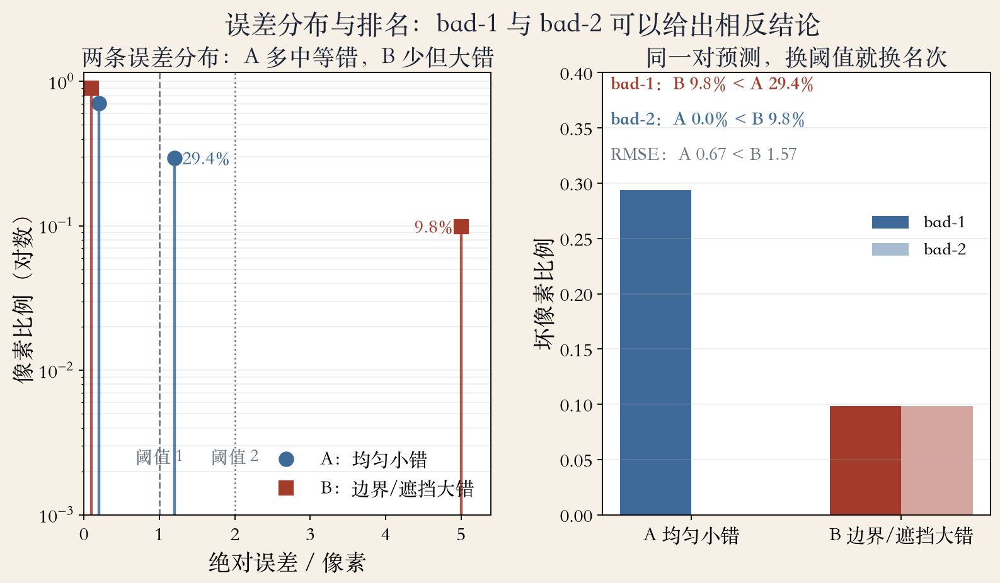

第 12 章 · 读榜先读协议
榜单：先读规则，再看名次
第一名不一定比第二名好。
换阈值、掩码或划分，名次会翻。
Middlebury 与 KITTI 是最早的榜单。
本集：五个基准、三个协议、习题。
依据：原书第 753 页
读榜三步
先看规则
再看名次
最后动手做习题
正课第一百一十集
01 / 12
原书第 754 页 · Table 12.1
基准：规模差三个数量级
原表 9 个基准，本集选 5 个。
Middlebury：33 对高分辨率图像。
KITTI：200 对训练加 200 对测试。
DTU 124 场景，SceneFlow 39000 对。
依据：原书第 754 页 Table 12.1

五个代表基准（原表共 9 个）：Middlebury、KITTI、DTU、ETH3D、SceneFlow｜程序生成，未用教材或论文原图
正课第一百一十集
02 / 12
原书第 754/781 页 · 高分辨率
Middlebury：33 对，考细节
33 对高分辨率立体图像。
高分辨率才看得清小视差。
训练数据非常有限。
深度学习方法仍明显缺席。
依据：原书第 754/781 页
这个榜考什么
少训练数据
高分辨率细节
长期稳定协议
正课第一百一十集
03 / 12
原书第 754/779/781 页 · 车载立体
KITTI：200 加 200，开卷考试
200 对训练，200 对测试。
2016 年起深度学习主导。
训练集给了同分布例题。
考得好，不等于跨域好。
依据：原书第 754/779/781 页
读 KITTI 先问
训练集多大
测试集调过参吗
换域还灵吗
正课第一百一十集
04 / 12
原书第 781 页 · 泛化
两个榜：同一网络，两种结果
Middlebury 训练少，网络缺席。
KITTI 训练多，网络霸榜。
有训练集，监督学习能攻榜。
换一个域，泛化就变差。
依据：原书第 781 页
第一名的条件
同分布
同指标
同训练预算
正课第一百一十集
05 / 12
实验沙盘 · bad-1 / bad-2
指标：换阈值就换名次
A 的错多在 1.2 像素。
bad-1：A 29.4%，B 9.8%。
bad-2：A 0.0%，B 9.8%。
RMSE：A 0.672，B 1.572。
依据：本集实验

bad-1 与 bad-2：同一预测，相反排名｜程序生成，未用教材或论文原图
正课第一百一十集
06 / 12
实验沙盘 · 离群误差
均方根误差：大错更贵
先平方，再平均，再开方。
A 0.672，B 1.572，A 更稳。
怕离谱大错，就看 RMSE。
只看超阈值，就看 bad-1、bad-2。
依据：本集实验
指标跟任务对齐
自动驾驶怕幽灵障碍
特效怕边缘毛刺
先定容忍度
正课第一百一十集
07 / 12
实验沙盘 · 边界/遮挡
掩码：换区域，换冠军
全图 bad-1：B 9.8%，A 29.4%。
去边界：B 4.4%，A 23.9%。
去遮挡：B 6.3%，A 21.6%。
B 的大错集中在边界和遮挡。
依据：本集实验
掩码要公开
去掉了什么
真值是否可靠
分母是否同口径
正课第一百一十集
08 / 12
实验沙盘 · 覆盖率
稀疏：有效区满分，覆盖 30%
C 只在 30.0% 像素有有效值。
有效区 bad-1 是 0.0%。
全图还有 70.0% 没有预测。
覆盖率和有效区指标要成对看。
依据：本集实验
只报有效区
等于只算做过的题
分母少了 70.0%
结论会变
正课第一百一十集
09 / 12
原书第 797/781 页 · closed-world
封闭世界：背答案也能高分
训练和测试在同一个世界。
网络可能按地面位置猜深度。
不常见的物体不“弹出来”。
跨域泛化仍是开放问题。
依据：原书第 797/781 页
捷径从哪来
同源数据
场景先验
跨域要另测
正课第一百一十集
10 / 12
原书第 801–803 页 · 习题 12.4–12.6
习题课：三个台阶，别跳级
12.4 平面扫描：先算匹配代价。
12.5 聚合窗口，12.6 全局优化。
顺序别跳，最后在 Middlebury 评测。
评测表写清划分、覆盖、阈值、掩码。
依据：原书第 801–803 页
三个台阶
12.4 平面扫描
12.5 聚合与窗口
12.6 全局优化
正课第一百一十集
11 / 12
总结 · 移交下一集
读榜五问：先问协议
数据集与划分：训练测试分开吗？
真值覆盖：稠密、稀疏还是带洞？
指标与阈值：bad-1、bad-2 还是 RMSE？
遮挡边界怎么算？跨域还能用吗？
依据：原书第 753–803 页；本集实验
读榜五问：数据集、真值、指标、掩码、跨域｜程序生成，未用教材或论文原图
正课第一百一十集
12 / 12